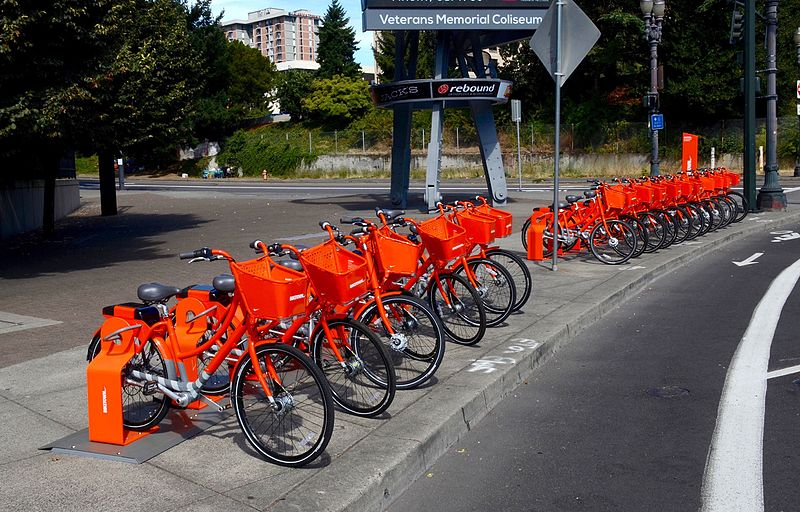
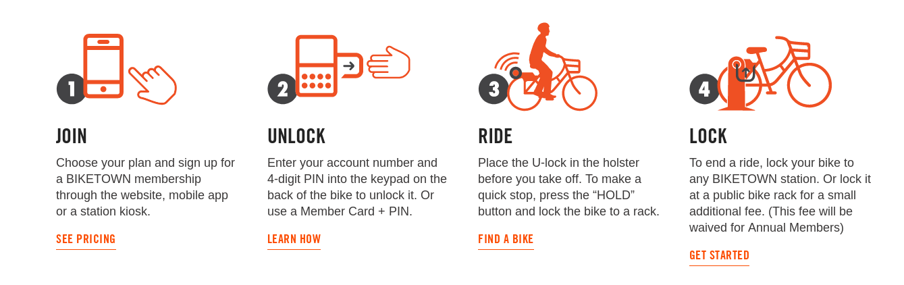
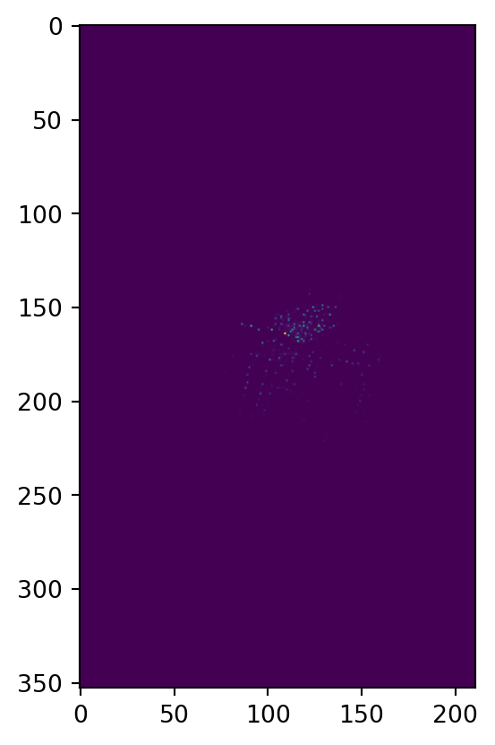
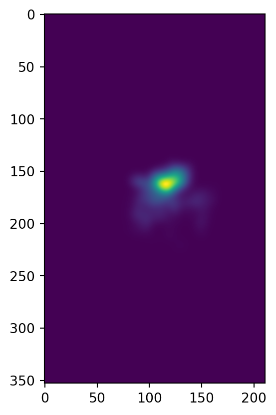
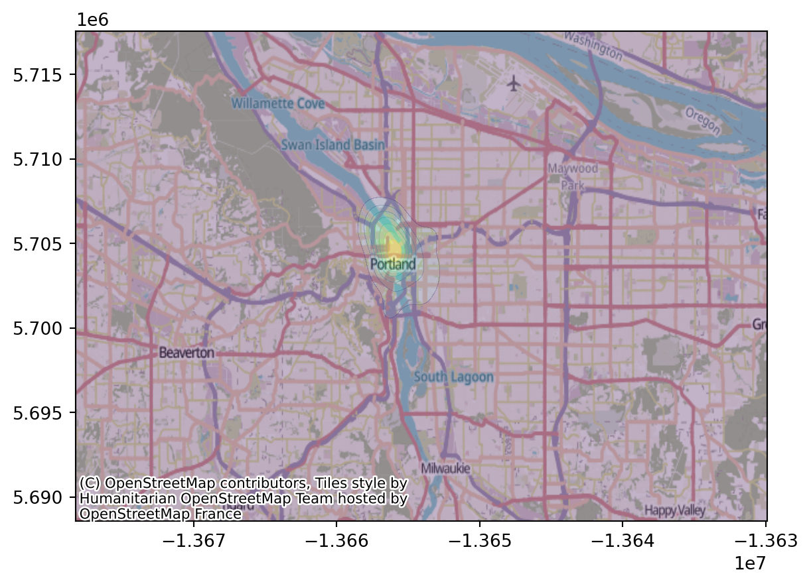
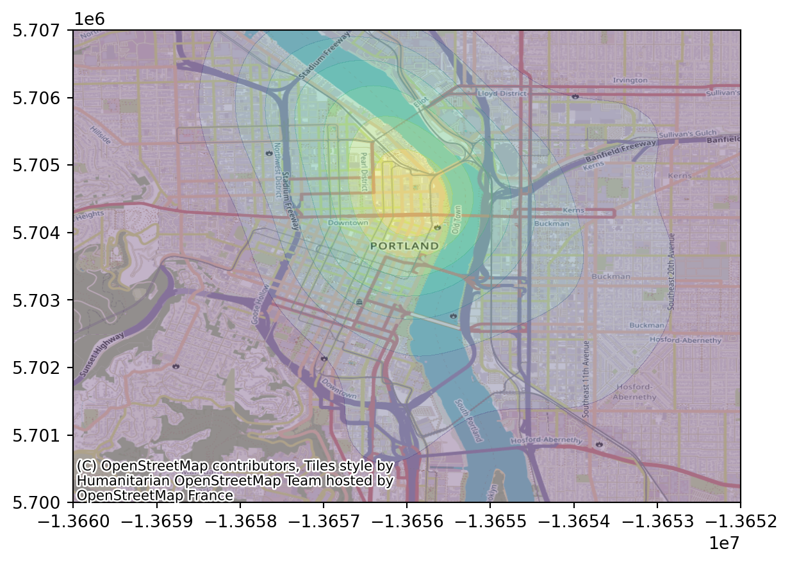

import pyproj
import geopandas as gpd
import pandas as pd
import numpy as np
import scipy.ndimage
import matplotlib.pyplot as plt
import contextilySpatial smoothing
Spatial point data: Biketown


August, 2018
Here is data from August, 2018.
df = pd.read_csv("data/biketown/2018_08.csv.gz")
df = df.loc[~df['StartLatitude'].isna(),:]
df.head(n=5)| RouteID | PaymentPlan | StartHub | StartLatitude | StartLongitude | StartDate | StartTime | EndHub | EndLatitude | EndLongitude | EndDate | EndTime | TripType | BikeID | BikeName | Distance_Miles | Duration | RentalAccessPath | MultipleRental | |
|---|---|---|---|---|---|---|---|---|---|---|---|---|---|---|---|---|---|---|---|
| 0 | 8530077 | Casual | NW Couch at 11th | 45.523742 | -122.681813 | 8/1/2018 | 0:00 | NE Couch at MLK | 45.523588 | -122.661918 | 8/1/2018 | 0:09 | NaN | 6841 | 0075 BIKETOWN | 1.09 | 0:08:41 | mobile | False |
| 1 | 8530088 | Casual | NE Couch at MLK | 45.523588 | -122.661918 | 8/1/2018 | 0:01 | SW 2nd at Pine | 45.521421 | -122.672629 | 8/1/2018 | 0:08 | NaN | 7312 | 0987 BETRUE TRAINER | 0.62 | 0:07:24 | mobile | False |
| 2 | 8530156 | Subscriber | SW 3rd at Ankeny | 45.522479 | -122.673297 | 8/1/2018 | 0:07 | NaN | 45.522987 | -122.681129 | 8/1/2018 | 0:31 | NaN | 6145 | 0567 BIKETOWN | 2.62 | 0:23:36 | keypad | False |
| 3 | 8530170 | Subscriber | NaN | 45.520015 | -122.682115 | 8/1/2018 | 0:08 | NaN | 45.536330 | -122.685748 | 8/1/2018 | 0:18 | NaN | 7498 | 0181 BIKETOWN | 1.36 | 0:09:51 | keypad_rfid_card | False |
| 4 | 8530168 | Subscriber | NaN | 45.520015 | -122.682115 | 8/1/2018 | 0:08 | NaN | 45.536330 | -122.685748 | 8/1/2018 | 0:18 | NaN | 6879 | 0747 BIKETOWN | 1.36 | 0:09:39 | keypad_rfid_card | False |
Transform points
First, we’d like actual spatial points in a sensible (isometric) coordinate system:
df['start_points'] = gpd.points_from_xy(df.StartLongitude, df.StartLatitude, crs="EPSG:4326").to_crs("EPSG:5070")
df['end_points'] = gpd.points_from_xy(df.EndLongitude, df.EndLatitude, crs="EPSG:4326").to_crs("EPSG:5070")
gdf = gpd.GeoDataFrame(df, geometry=df['start_points'], crs=5070)
gdf[:1000].explore()Make this Notebook Trusted to load map: File -> Trust Notebook
Goals
- Where do most trips start?
- Where do they end up?
- Is there a net flux of bikes anywhere?
We’ll make some maps with spatial smoothing to answer this, and evaluate if that was a good tool for the job.
Interlude: when there’s lots of data
Too much data?
In this class we’ve mostly not worried about computation. Modern computers deal with vectors of length \(10^7\)–\(10^8\) pretty much instantly.
But, what if you’ve got more? Options:
- Use less data.
- Look at summaries of the data.
Considerations:
- Do you really need \(n=10^{12}\) for whatever you’re looking for? Probably not!
- If you sub-sample, make sure the sub-sampling is appropriate (i.e., if the sub-sample has structure, it’s structure you want to look at).
- You probably want to pilot your summaries on a sub-sample anyhow.
Too much data, take two
It’s real easy to run into “too much data” in spatial contexts, basically because \(N^2 > N\).
Why?
Images/rasters: my display is 2256 x 1504, which is 3.3M pixels. It’s easy to have a lot of images.
Pairwise comparisons: Many spatial operations require operating “nearby” objects. Naively, that requires working with all \(O(N^2)\) pairwise distances.
Example: kernel density estimation
Suppose we have a bunch of points
\[ (x_1, y_1), \ldots, (x_n, y_n) \]
with density \(f(x,y)\), i.e.,
\[ f(x,y) \approx \frac{\#(\text{of points within $r$ of $(x,y)$})}{\pi r^2} \]
Using (for instance)
\[ \rho_\sigma(x,y) = \frac{1}{2\pi\sigma^2} e^{-\frac{x^2+y^2}{2\sigma^2}} \]
we can estimate \(f(x,y)\) by
\[ \hat f(x,y) = \sum_{i=1}^n \rho_\sigma(x_i-x, y_i-y) . \]
(interlude: why?)
Try it out (in one dimension)
Simulate 200 spatial locations with a density having two “bumps”. Plot these points. (
rng.normal(size=n, loc=-3), rng.normal(size=n, loc=+3))Make 20 “reference” locations.
Compute the kernel density estimate for each reference location, with \(\sigma\) chosen appropriately, and plot it. (
scipy.stats.normal.pdf( ))
Uh-oh, it’s quadratic
Note that this required \(O(NM)\) operations, where \(N\) is the number of data points, and \(M\) is the number of reference locations.
This is not as bad as \(O(N^2)\)!
But, suppose we wanted “density estimate for each of our \(N\) points”. The naive method would use data points = reference points: \(O(N^2)\).
Better: get estimated density at a grid of references, and use linear interpolation.
Guidelines for keeping your computer happy
- Start with small \(N\), look out for things that take a long time.
- If you actually need “all pairwise” values, keep \(N\) small (below 1,000 or so?).
- If an operation seems to need pairwise values under the hood, use “algorithms”: for instance, \(k-d\) trees (spatial libraries will do this sort of thing for you).
Back to the data
Smoothed map of starting locations
First, we’ll bin things into a 2D grid:
sigma = 5 # meters
delta = 100 # meters
xy = np.array([x.coords[0] for x in gdf['start_points']])
extent = [np.min(xy[:,1]), np.max(xy[:,1]), np.min(xy[:,0]), np.max(xy[:,0])]
xx = np.linspace(extent[2], extent[3], int(abs(extent[3]-extent[2])/delta))
yy = np.linspace(extent[0], extent[1], int(abs(extent[1]-extent[0])/delta))
heatmap, xedges, yedges = np.histogram2d(xy[:,0], xy[:,1], bins=[xx, yy])
plt.imshow(heatmap)
Then, we smooth it: (question: how’s this relate to how we did KDE above?)
heatmap = scipy.ndimage.gaussian_filter(heatmap, sigma=sigma, mode='nearest')
plt.imshow(heatmap)
Better plotting
There’s various ways to do this. One is to use contextily as demonstrated here. First, we need to convert to “EPSG:3857 (Web Mercator)”:
xpts = gpd.points_from_xy(xx, np.full((len(xx),), np.mean(yy)), crs="EPSG:5070").to_crs("EPSG:3857")
ypts = gpd.points_from_xy(np.full((len(yy),), np.mean(xx)), yy, crs="EPSG:5070").to_crs("EPSG:3857")
gpd.GeoDataFrame(geometry=gpd.points_from_xy(
np.concat([xx, np.full((len(yy),), np.mean(xx))]),
np.concat([np.full((len(xx),), np.mean(yy)), yy])),
crs="EPSG:5070").to_crs("EPSG:3857").explore()Make this Notebook Trusted to load map: File -> Trust Notebook
Now, we can superimpose on the OSM map:
XX, YY = np.meshgrid(
[x.coords[0][0] for x in xpts[1:]],
[y.coords[0][1] for y in ypts[1:]],
)
fig, ax = plt.subplots()
ax.contourf(XX, YY, heatmap.T, alpha=0.3)
contextily.add_basemap(ax);
Let’s zoom in:
fig, ax = plt.subplots()
ax.contourf(XX, YY, heatmap.T, alpha=0.3)
ax.set_xlim(-1.366e7, -1.3652e7)
ax.set_ylim(5.7e6, 5.707e6)
contextily.add_basemap(ax);
Bandwidth is important
Question:
Above I set:
sigma = 5 # meters
delta = 100 # metersWhat are these numbers, in words, and are these good choices?
Exercise:
Explore different choices of these two parameters. To do this:
- Write a function that takes in
sigmaanddeltaand makes a plot. - Play around with it.
Choosing a bandwidth
How to pick a bandwidth?
There are various automatic methods.
But… crossvalidation!
For each bandwidth:
- Fit using most of the data,
- and predict the remaining data.
- Do this a bunch and return an estimate of goodness-of-fit.
… but wait, what’s this mean, here?
Revised:
For each bandwidth:
- Fit the smooth using most of the data,
- predict the density at the locations of the remaining data,
- and return the mean log density at “true” points.
Why log?:
If \(f\) and \(g\) are probability distributions, and \(x_1, \ldots, x_n\) are drawn from \(f\), then \[ L(g) = \sum_{i=1}^n \log g(x_i) \lessapprox L(f) , \] i.e., is maximized for \(g=f\). (see: cross entropy)